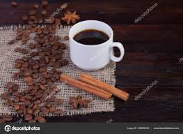

 O café é uma bebida produzida a partir dos grãos torrados do fruto do cafeeiro. É servido tradicionalmente quente, mas também pode ser consumido gelado. O café é um estimulante, por possuir cafeína — geralmente 80 a 140 mg para cada 207 ml dependendo do método de preparação. Estudos têm mostrado que pessoas que bebem quatro xícaras de café por dia têm um menor risco de morrer de um ataque cardíaco. Dia 13/04 é dia mundial do café. Em alguns períodos da década de 1980, o café era a segunda mercadoria mais negociada no mundo por valor monetário, atrás apenas do petróleo. Este dado estatístico ainda é amplamente citado, mas tem sido impreciso por cerca de duas décadas, devido à queda do preço do café durante a crise do produto na década de 1990, reduzindo o valor total de suas exportações. Em 2003, o café foi o sétimo produto agrícola de exportação mais importante em termos de valor, atrás de culturas como trigo, milho e soja.